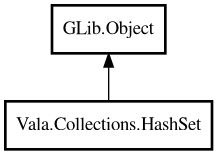

HashSet
Object Hierarchy:

Description:
public class HashSet<T> : Object
A hash table-based set of unique elements.
HashSet provides O(1) average-time add, remove, and contains. Inspired by Java's HashSet and Python's set.
Set operations (union, intersection, difference) return new sets without modifying the originals.
Example:
var set = new HashSet<string> (GLib.str_hash, GLib.str_equal);
set.add ("apple");
set.add ("banana");
set.add ("apple");
assert (set.size () == 2);
assert (set.contains ("apple"));
Content:
Creation methods:
Methods:
- public bool add (owned T element)
Adds an element to the set. If the element already exists, the set is
not modified.
- public void addAll (HashSet<T> other)
Adds all elements from another HashSet to this set.
- public void clear ()
Removes all elements from the set.
- public bool contains (T element)
Returns whether the set contains the specified element.
- public HashSet<T> difference (HashSet<T> other)
Returns a new set containing elements that are in this set but not in
the other set.
- public void forEach (owned ConsumerFunc<T> func)
Applies the given function to each element in the set. The iteration
order is not guaranteed.
- public HashSet<T> intersection (HashSet<T> other)
Returns a new set containing only elements that are in both this set
and the other set.
- public bool isEmpty ()
Returns whether the set is empty.
- public bool isSubsetOf (HashSet<T> other)
Returns whether this set is a subset of the other set. A set A is a
subset of B if every element of A is also in B. An empty set is a subset of any set.
- public bool remove (T element)
Removes an element from the set.
- public uint size ()
Returns the number of elements in the set.
- public T[] toArray ()
Returns the elements as a native array.
- public HashSet<T> union (HashSet<T> other)
Returns a new set containing all elements that are in either this set
or the other set (or both).
Inherited Members:
All known members inherited from class GLib.Object
- @get
- @new
- @ref
- @set
- add_toggle_ref
- add_weak_pointer
- bind_property
- connect
- constructed
- disconnect
- dispose
- dup_data
- dup_qdata
- force_floating
- freeze_notify
- get_class
- get_data
- get_property
- get_qdata
- get_type
- getv
- interface_find_property
- interface_install_property
- interface_list_properties
- is_floating
- new_valist
- new_with_properties
- newv
- notify
- notify_property
- ref_count
- ref_sink
- remove_toggle_ref
- remove_weak_pointer
- replace_data
- replace_qdata
- set_data
- set_data_full
- set_property
- set_qdata
- set_qdata_full
- set_valist
- setv
- steal_data
- steal_qdata
- thaw_notify
- unref
- watch_closure
- weak_ref
- weak_unref